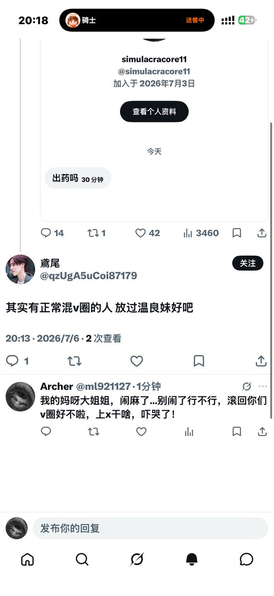

小小小小风
@XF_shiho_mafuyu
bz战一柔｜st｜刚加别发｜触雷v5｜置深｜拉群v5｜免慢｜直拉｜秒代烟代｜接🔮｜代跑｜爱腾讯🇨🇳｜🈶秒｜无🈺无脸别来｜单删v52｜置属撞互｜婉拒同担价｜带列｜藏属死妈｜刚补｜备拍 | 拒普窗｜低脂丑逼快滚｜婉拒刻嘴薄毒｜糊逼快滚｜定期清列

Archer
@ml921127
都混v圈的还想当正常人，搞笑呢。当初bz战一柔那群人全变成了 刚别｜5.2 https://t.co/5N5y0oMBvL